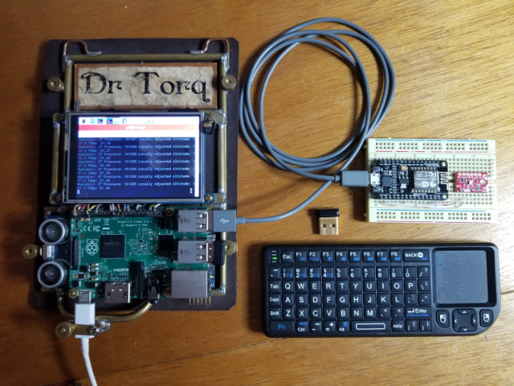

histoire de Raspbery PI
Le Raspberry PI est un nano-ordinateur monocarte avec un processeur ARM. Il fut sortie le 29 février 2012 développé par la fondation qui porte son nom "Fondation Raspberry PI". Il fut créé par des professeurs d'informatique,David Braben, Louis Glass, Jack Lang, Pete Lomas, Robert Mullins et Alan Mycroft, dans le but de promouvoir les bases de la programation dans les écoles. Le siège de la fondation se situe au Royaume-Uni Lors de sa sortie, il ne coutait que 25€ et en l'espace de 4 ans, il s'en ai vendu plus de dix millions. Les premiers Raspberry PI ont eut pour dimensions environ 86mm de longueur, 54mm de largeur et 17mm de hauteur pour une masse de 45g. Au fil des années, ses dimensions ont énormement reduit passant à 65mm de longueur, 30mm de largeur et 5mm de hauteur pour une masse qui elle aussi a diminuée passant à 23g Au total il y a eu 13 modèles de Raspberry PI concut et que se sont vendu dans le monde entier
